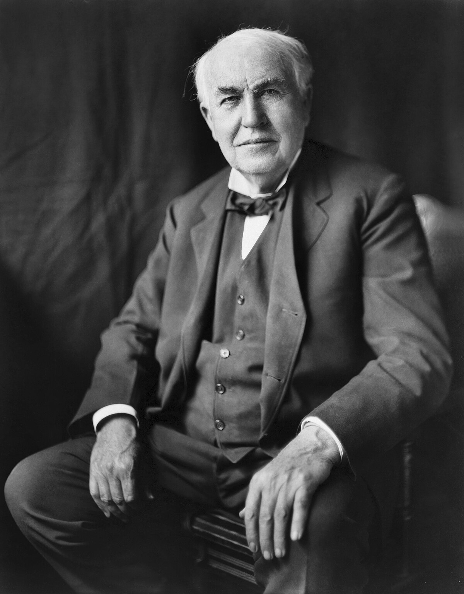
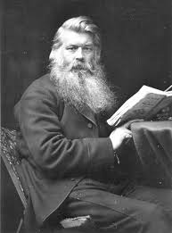

Most think that Thomas Edison invented the lightbulb, but it was actually a joint effort between him and a man named Joseph Swan. Even before the Ediswan company there were many other people who invented things lightbulb adjacent. Their names are not as prominent throughout history, as Edison patented the rights to the lightbulb which was the most commercially successful. They did pave the way for the invention of the lightbulb however a strong building block for the convenience we enjoy now.

| Inventor | Invention |
|---|---|
| Humphrey Davy | First Electric Light |
| Warren de la Rue | Electrified Coiled Platinum Filiment |
| Henry W. & Matthew E. | Original Patent for the Lightbulb |
| Thomas Edison | Efficient and Comercially viable Lightbulb |
As you can see there were many iterations before the lightbulb truly came into being. What made it important to history was the day it become comercially available and worth investing in. Thomas Edison perfecting the formula did change history and the world has since upgraded even beyond what he made. His innovation on previous works and ability to market his creation cemented his name in history beyond his predecessors.